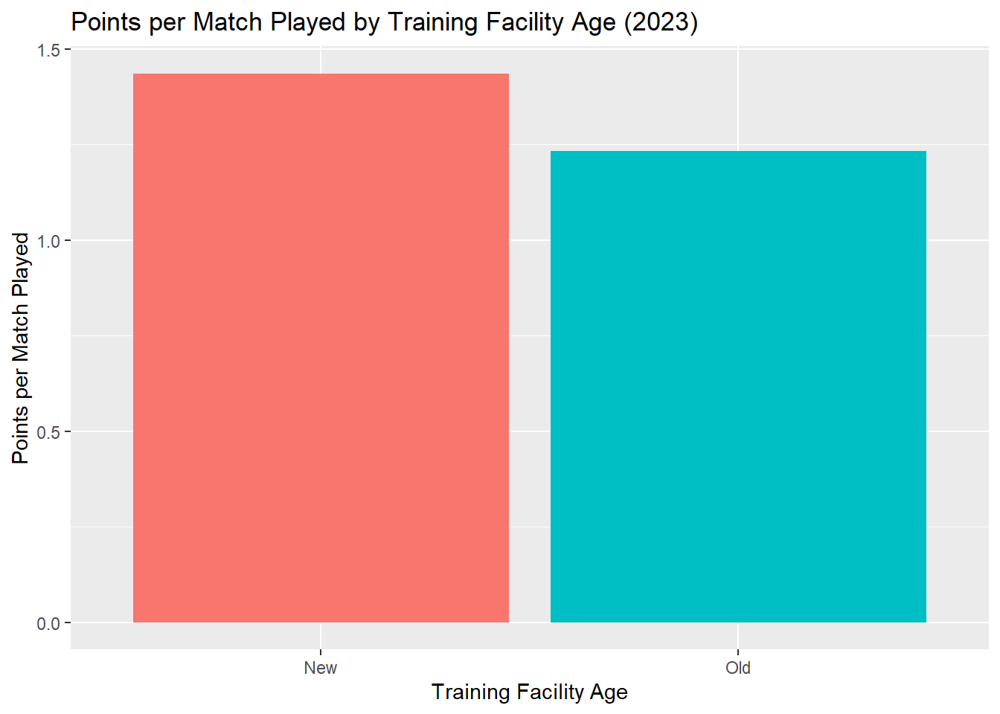
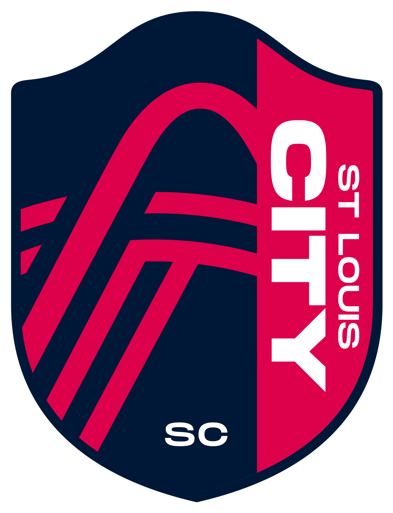
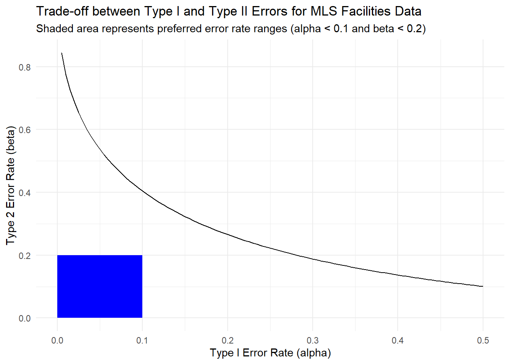

.jpg){kind=link}
{kind=link}

MLS - Types of Decision Errors
Decision Errors
Exploring types of decision errors
Welcome video
Introduction
In this module, we will explore the concept of decision errors in hypothesis testing. We will use MLS (Major League Soccer) training facility data to explore Type I and Type II errors.
Inter Miami CF opened a $40 million training facility in 2020. It sprawls over 25 acres and includes 7 fields. The field is adjacent to their home stadium and can be seen in the background of the image below.
Image Source: Cornfield948, CC BY-SA 3.0, via Wikimedia Commons
In the last decade (2014-2023) more than half of all MLS teams opened new training facilities, and several more clubs have plans to build new facilities soon. These cutting edge facilities are designed to provide players with the best possible environment to train and develop, hopefully translating to better performance on the field.
Do these new, state-of-the-art facilities lead to better performance on the field though? What are some potential consequences of claiming they make a difference when they don’t? What are some potential consequences of claiming they don’t make a difference when they do?
We will explore these questions and more as we kick off our exploration of hypothesis testing and decision errors. For our purposes we will consider any team with a training facility that opened in 2014 or later to have a new training facility and any team with a training facility that opened before 2014 to have an old training facility.
Terms to Know
ON THE RISE New teams like St. Louis City SC have helped fuel the MLS’s growth. St. Louis City SC joined the league in 2023 and has already made a splash.
Ratings, attendance, and revenue have all increased dramatically over the last decade.

Image Source: IagoQnsi, CC BY-SA 4.0, via Wikimedia Commons
Hypothesis Testing
Before we can kick off our exploration of decision errors, we need to understand the basics of hypothesis testing.
Hypothesis testing, a method used to make decisions about a population parameter based on sample data, is a foundational concept in statistics. The decision is made by comparing the sample data results to a null hypothesis. The null hypothesis is generally a statement that there is no effect or no difference than what is assumed to be the true. An alternative hypothesis is a statement that there is an effect or a difference. A hypothesis test can be done for one sample, two sample, or many samples.
Null and Alternative Hypotheses
The null hypothesis is generally denoted by \(H_0\) and the alternative hypothesis is generally denoted by \(H_a\). For one sample tests, the null hypothesis is often that the population parameter is equal to a specific value. For example \(H_0 : \mu = \mu_0\). For multiple sample tests, the null hypothesis often states that there is no difference between the groups. For example \(H_0: \mu_{1} = \mu_{2} = ... = \mu_{n}\).
NOTE: All examples in this section are using the population mean (\(\mu\)) as the parameter of interest. Any population parameter can be tested using hypothesis testing. Other common parameters include the population proportion (\(p\)) and the population variance (\(\sigma^2\)).
An example of a hypothesis test using proportions is shown below:
\[H_0: p = p_0\]
\[H_a: p \neq p_0\]
Where \(p\) is the population proportion and \(p_0\) is the assumed population proportion.
The alternative hypothesis is a statement that there is an effect or a difference. For a one sample test, the alternative hypothesis is generally that the population parameter is not equal to, greater than, or less than a specific value. For example, \(H_a: \mu \neq \mu_0\), \(H_a: \mu > \mu_0\), or \(H_a: \mu < \mu_0\). For a multi-sample test, the alternative hypothesis is generally that there is a difference between the groups. \(H_a: \text{ At least one } \mu_i \text{ is different}\).
Setting up a Hypothesis Test
Let’s set up a hypothesis test to determine if a new training facility leads to better performance on the field. We will use points per match played as our measure of performance. The null hypothesis is that there is no difference in points per match played between teams with new training facilities and teams without new training facilities. The alternative hypothesis is that the teams with new training facilities have a higher points per match played than teams without new training facilities.
Fun Fact: The top team in the MLS in 2023, FC Cincinnati, averaged 2.03 points per match. They opened a new training facility in 2019.
The graph below show the points per match played in 2023 for teams with new training facilities and teams without new training facilities.
\[H_0: \mu_{new} = \mu_{old}\]
\[H_a: \mu_{new} \ge \mu_{old}\]
Where \(\mu_{new}\) is the population mean points per match played for teams with new training facilities and \(\mu_{old}\) is the population mean points per match played for teams without new training facilities.
Significane Level and Decisions in Hypothesis Testing
In hypothesis testing, we make a decision to either reject the null hypothesis or fail to reject the null hypothesis. We make this decision based on the sample data and the significance level. The significance level is the probability of making a Type I error, which we will expand on soon. The significance level is denoted by \(\alpha\). We often use the probability of observing the sample data given that the null hypothesis is true, called the p-value, to make our decision. If the p-value is less than the significance level, we reject the null hypothesis. If the p-value is greater than the significance level, we fail to reject the null hypothesis.
Click here to read more about p-values and significance levels.
These decisions can be either correct or incorrect. A correct decision occurs when we reject the null hypothesis when the null hypothesis is false or when we fail to reject the null hypothesis when the null hypothesis is true. An incorrect decision occurs when we reject the null hypothesis when the null hypothesis is true or when we fail to reject the null hypothesis when the null hypothesis is false.
All the possible outcomes of a hypothesis test are shown in the table below.
| \(H_0\) is True | \(H_0\) is False | |
|---|---|---|
| Do not reject \(H_0\) | Correct Decision | Type II Error |
| Reject \(H_0\) | Type I Error | Correct Decision |
Type I Errors
A Type I error occurs when we reject a true null hypothesis. In other words, we conclude that there is an effect when there is no effect. Type I errors are also known as false positives. The probability of making a Type I error is denoted by \(\alpha\) and is also known as the significance level. We control the likelihood of making a Type I error by setting the significance level.
When we construct a 95% confidence interval, we set the significance level to 0.05. This indicates that there is a 5% chance of making a Type I error. \(\alpha = 0.05\) is the most common significance level used in hypothesis testing.
Quote: “For in fact no scientific worker has a fixed level of significance at which from year to year, and in all circumstances, he rejects hypotheses; he rather gives his mind to each particular case in the light of his evidence and his ideas” - Ronald Fisher
Keep in mind that the significance level can be adjusted based on the context of the hypothesis test and what type of error is more costly. Alphas of 0.05 or 0.01 are not the end-all-be-all significance levels.
In our example of the new training facilities, a Type I error would occur if we conclude that teams with new training facilities have a higher points per match played than teams without new training facilities, when there truly is no difference in points per match played between the two groups.
Type II Errors
A Type II error occurs when we fail to reject a false null hypothesis. We conclude that there is no effect when there is an effect. Type II errors are also known as false negatives. The probability of making a Type II error is denoted by \(\beta\). The value of beta is determined by the power of the test, which is the probability of correctly rejecting a false null hypothesis. Often we want power to be at least 0.80. This means that we want the probability of making a Type II error to be less than 0.20.
\[\beta = 1 - \text{Power}\] The power of a test depends on the sample size, the effect size, and the significance level. As a general rule, increasing the sample size, increasing the effect size, and decreasing the significance level will increase the power of a test. The full calculations for power are beyond the scope of this lesson.
In our example of the new training facilities, a Type II error would occur if we conclude that there is no difference in points per match played between teams with new training facilities and teams without new training facilities, when in reality teams with new training facilities have a higher points per match played than teams without new training facilities.
The effect size of our test for comparing points per match played between teams with new training facilities and teams without new training facilities is found using Cohens-d and the power is then calculated using more advanced statistical methods.
Relationship between Type I and Type II Errors
There is a trade-off between Type I and Type II errors. If we decrease the probability of making a Type I error, we increase the probability of making a Type II error. If we increase the probability of making a Type I error, we decrease the probability of making a Type II error. This means that we need to carefully consider the consequences of each type of error when designing a hypothesis test.
In our example of the new training facilities, if we increase the significance level from 0.05 to 0.10, our power increases from 0.463 to 0.596. This means that we are more likely to detect a difference in points per match played between teams with new training facilities and teams without new training facilities. However, we are also twice as likely to make a Type I error than previously.
Below is a plot showing this trade-off between Type I and Type II errors in our example of the new training facilities.

In the plot above it can be seen that we never have as much power as we would like for any reasonable Type I error rate.
What’s Worse: Type I or Type II Errors?
The answer to this question depends on the context of the hypothesis test. In some cases, a Type I error is more serious than a Type II error. In other cases, a Type II error is more serious than a Type I error. Below are two examples related to injuries in sports.
Example where Type I error is more serious than Type II error
Assume that a new recovery method is being tested for athletes with muscle injuries. This method claims to help athletes recover faster from their injuries. The null hypothesis is that the new recovery method takes the same amount of time as traditional recovery methods. The alternative hypothesis is that the new recovery method is faster than traditional recovery methods.
A Type I error in this context would claim that the new recovery method is effective, when in reality it is not. This could result in athletes using the new recovery method and potentially worsening their injuries by returning to play too soon. A Type II error in this context would be when the new recovery method is assumed to be ineffective when it is actually effective. This would result in athletes continuing to recover following traditional recovery timelines.
The risk of more serious injuries and more setbacks in the injury recovery process appears to be more serious than the risk of athletes continuing to follow standard recovery timelines. Therefore, in this context, a Type I error is more serious than a Type II error.
Example where Type II error is more serious than Type I error
An example of a Type II error being more serious than a Type I error can be seen in the context of concussion protocols in sports. A player takes a hard hit to the head during a game. Team physicians run quick tests on the player. The null hypothesis is that the player performs equal on the test to an uninjured player and therefore does not have a concussion, while the alternative hypothesis is that the player performs worse and therefore has a concussion.
A Type I error would assume a player has a concussion when they do not. This could result in the player being taken out of the game unnecessarily, but would not have long term consequences for their health and safety. A Type II error in this context would incorrectly assume a player was fine after a head injury, when they in fact have a concussion. This could result in the player continuing to play when they should not, potentially leading to serious long-term brain damage.
The risk of serious long term brain damage from a concussion is much greater concern than the risk of a player being taken out of a game unnecessarily. Therefore, in this context, a Type II error is more serious than a Type I error.
Results of the Hypothesis Test
Using our example of the new training facilities, we can perform a hypothesis test to determine if there is a difference in points per match played between teams with new training facilities and teams without new training facilities. Results of different hypothesis tests with different significance levels and power are shown below. The p-value of the test is 0.03524.
The test used to produce these results is a two-sample t-test for the means of two independent samples. For more information on tests like this click here.
| Test NO. | Significance Level | Power | Decision | Possible Error | Possible Error Rate |
|---|---|---|---|---|---|
| 1 | 0.05 | 0.463 | Reject Null Hypothesis | Type I Error | 0.05 |
| 2 | 0.10 | 0.596 | Reject Null Hypothesis | Type I Error | 0.10 |
| 3 | 0.01 | 0.224 | Fail to Reject Null Hypothesis | Type II Error | 0.776 |
Conclusion
In this lesson, we learned about Type I and Type II errors in hypothesis testing. We learned that a Type I error is a false positive, and the rate is controlled by the significance level of the test. We learned that a Type II error is a false negative, and the rate is controlled by the power of the test. There is a trade-off between Type I and Type II errors, and the consequences of each type of error depend on the context of the hypothesis test.
Fun Fact: The Seattle Sounders have clearly bought into the idea that new training facilities will help them win more games. Their new facility opened in 2024 and they bid farewell to the old Starfire Training Facility depicted below.
Image Source: Joe Mabel, CC BY-SA 3.0, via Wikimedia Commons
{kind=link}
Errors in hypothesis testing can have serious consequences, so it is important to carefully consider the significance level and power of the test when designing a hypothesis test. Increasing the sample size is the most effective way to make our hypothesis test more powerful. Just remember, when performing and interpreting hypothesis tests there is always a chance of making an error, and it is important to consider the consequences of each type of error before beginning.